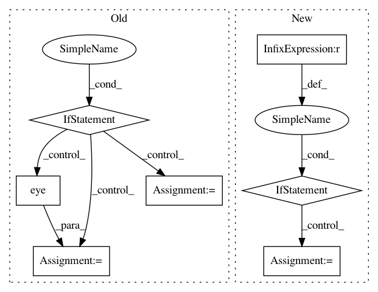

39ddc5f5d2cb75be64204438d60dd3a45d4c300f,dipy/sims/voxel.py,,multi_tensor_pdf,#Any#Any#Any#Any#Any#,531
Before Change
if mevals is None:
mevals = [None, ] * len(mf)
if mevecs is None:
mevecs = [np.eye(3) for i in range(len(mf))]
for j, f in enumerate(mf):
pdf += f * single_tensor_pdf(pdf_points,
evals=mevals[j], evecs=mevecs[j], tau=tau)
return pdf
After Change
mf = [f / 100. for f in fractions]
angles = np.array(angles)
if angles.shape[-1] == 3:
sticks = angles
else:
sticks = [sphere2cart(1, np.deg2rad(pair[0]), np.deg2rad(pair[1]))
for pair in angles]
sticks = np.array(sticks)
pdf = np.zeros(len(pdf_points))
mevecs = []
for s in sticks:
In pattern: SUPERPATTERN
Frequency: 3
Non-data size: 7
Instances
Project Name: nipy/dipy
Commit Name: 39ddc5f5d2cb75be64204438d60dd3a45d4c300f
Time: 2013-12-21
Author: garyfallidis@gmail.com
File Name: dipy/sims/voxel.py
Class Name:
Method Name: multi_tensor_pdf
Project Name: nipy/dipy
Commit Name: a624cf79454b45ab74dad9493f3c077f09eb91e7
Time: 2018-04-22
Author: garyfallidis@gmail.com
File Name: dipy/segment/bundles.py
Class Name: RecoBundles
Method Name: recognize
Project Name: SheffieldML/GPy
Commit Name: 17bfccb45736a1877779218b43791de4e56a3a5e
Time: 2016-05-06
Author: ibinbei@gmail.com
File Name: GPy/kern/src/stationary.py
Class Name: Stationary
Method Name: gradients_XX